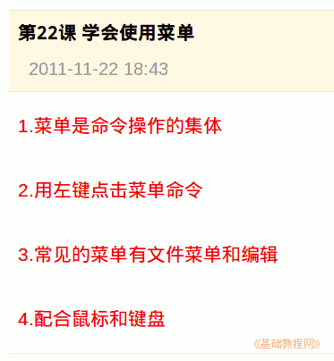

2011-2012 第一学期七年级电脑操作基础教学课程设计
作者：TeliuTe 来源：基础教程网
二十二、学会使用菜单 返回目录 下一课学习目标：学会使用菜单；
注意事项：菜单都是用左键点一下；
1、学会使用菜单
1）菜单的作用是操作命令；
2）用左键点击菜单；
3）常见的菜单有文件菜单和编辑；
4）用键盘也可以访问菜单；

课后记 2011-11-22 16:45：
4班吵的还乱，几个老师一块训本节学习了使用菜单的基础知识，如果你成功地完成了练习，请继续学习下一课内容；
本教程由86团学校TeliuTe制作|著作权所有
基础教程网：http://teliute.org/
美丽的校园……
转载和引用本站内容，请保留作者和本站链接。